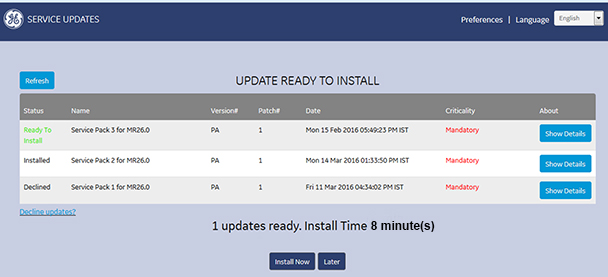

- Object ID: 00000018WIA3003D010GYZ
- Topic ID: id_2002950 Version: 3.2
- Date: Jul 28, 2025 5:44:36 PM
Installing updates using root logon
Log on as root to install updates as needed.
Procedure
- Log on as root to install updates as needed.
Result
At root logon, the user interface shown below always launches at system start-up, even if there is no update available. It shows the new update and a history of updates.Note It is not possible to uninstall updates with this tool.Figure 1. RSD root user interface 
- Click Show Details to see details from the read me file contained in the service pack.
- Choose one of the following installation options.
- Click Install Now to install the update. An installation confirmation will show when the update is completed. Note Select only items of interest. If you select all files, this will increase the install time to more than 10 minutes.
- Click Later to skip the update for the current session. The system will prompt to install the updates at the next system start-up.
- Click Decline Updates? to decline installation update. You must enter your name, role, and reason for declining the update in the Decline System Update form. Click Decline Update to submit the form. A confirmation message will show. Note You can install a declined update later as long as it has not been superseded by a newer update.
- Click Install Now to install the update. An installation confirmation will show when the update is completed.